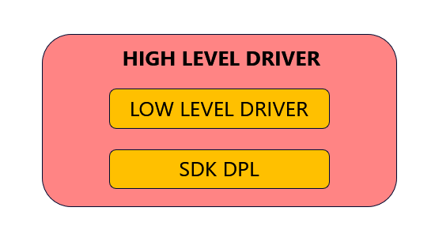
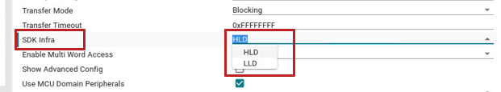

Introduction
MCU+ SDK supports two different driver types - High Level Drivers(HLDs) and Low Level Drivers(LLDs). High Level Drivers are heavily abstracted and promote ease of use. The majority of driver requirements, including Interrupt registration, Debug support and more, are handled within the driver. This allows the application to be minimal in terms of Lines of code and complexity. These drivers internally use the Low level Drivers for IP functionality and rely on the SDK DPL layer for abstraction. Low Level Drivers are designed for configurability and enhanced performance. These drivers access the hardware and configure it according to application requirement; they do not contain any DPL components integrated within. Since LLDs don't rely on any DPL layer, applications must handle driver dependencies such as Interrupt registration and implementation of hook functions such as Clock.
LLD SW Architecture
Shown below is a block diagram of HLD driver in SDK,

SDK HLD SW Block Diagram
Below is a High level summary of SW Architecture differences between HLDs and LLDs -
- HLDs use HwiP module to register interrupts within the driver, and the HwiP module's Proxy ISR handler calls ISR routines. For LLDs, the application is responsible for handling interrupt registration since LLD drivers don't register interrupts.
- All HLDs use SystemP macros to receive error and other status returns from APIs. Whereas in LLD, every driver has a unique set of macros based on functionality.
- HLDs use ClockP for Time management within the driver(for Timeout implementation, etc). LLDs provide hooks within the driver handle where application can have a custom implementation for the same and fill the hook. HLD directly adds ClockP API's to this Hook.
- DebugP module is used by HLD for Debug logs and assertions. LLD's don't have this support and instead return different Macro's based on the status or error. Application can parse this for debugging purpose. -SemaphoreP Module is used by HLD to implement Blocking functionality and other process synchronizations. LLD supports only callback mode in driver. Blocking operation has to be implemented at the application level.
- Unlike HLD, where we have a Do-It-All API which takes care of Interrupt, Polling and DMA mode of Operation, LLD has Separate API for each transfer mode. Also, Initialization API is separate for DMA and Non-DMA mode. This allows for lesser code size in case DMA is not used by Application.
- HLD uses extern keyword since Init API's directly don't get the driver handle but instead an index to an arry of handle. LLD doesn't extern to any memory since driver handle is directly passed as an argument.
- HLD driver handle is a void pointer which points to config structure which inturn contains Attributes(Hardware Configurations) and Object(Driver runtime memory). LLD handles directly point to Object memory which itself contains both Hardware configurables and Runtime memory for driver.
- HLD Drivers have most parameters abstracted into a single structure but LLD API's follow a flat prototype.
- ...
SysCfg Support
SysCfg Support is enabled for both HLDs and LLDs. The generated code takes care of Initialization in both cases. For LLD, Interrupt registration has to be done in Application. SysCfg GUI will have a configrable called "SDK Infra" which can be set to "LLD" or "HLD" which allows for choice between Low Level and High Level driver.
Below image shows the SysCfg GUI as mentioned above:

SDK HLD-LLD SysCfg configuration
Steps to use LLD Drivers in Application
Below are the steps to be followed to integrate LLD Drivers in application:
- Create LLD Driver object and update the hardware configuration fields as per requirement.
- Fill the API hooks in the object for cross module dependencies such as Clock, etc.
- Define callbacks for transfer completion, error, etc in application and attach them to the driver handle.
- Then invoke the LLD Initialization API which is different for DMA and Non-DMA mode. If SysCfg is used, this is already taken care by SysCfg generated code.
- Register Interrupt. Use the ISR Routine provided as part of driver or replace it with another custom implementation in application. Note that the other driver API's are written to be compatible with the Driver defined ISR.
- Use LLD functionality API's. Here, the API's would be different for Polling, Interrupt and DMA mode. For Interrupt and DMA mode, Callbacks would be invoked after completion or error. To setup blocking mode, application has to setup a pend after the api call which gets posted from within the callback.
- Unregister the interrupt.
- Call LLD De-Init API's.
Additional References
See also these additional pages for more details and examples about LLD's,
- McSPI LLD Driver
- UART LLD Driver
 1.8.20
1.8.20